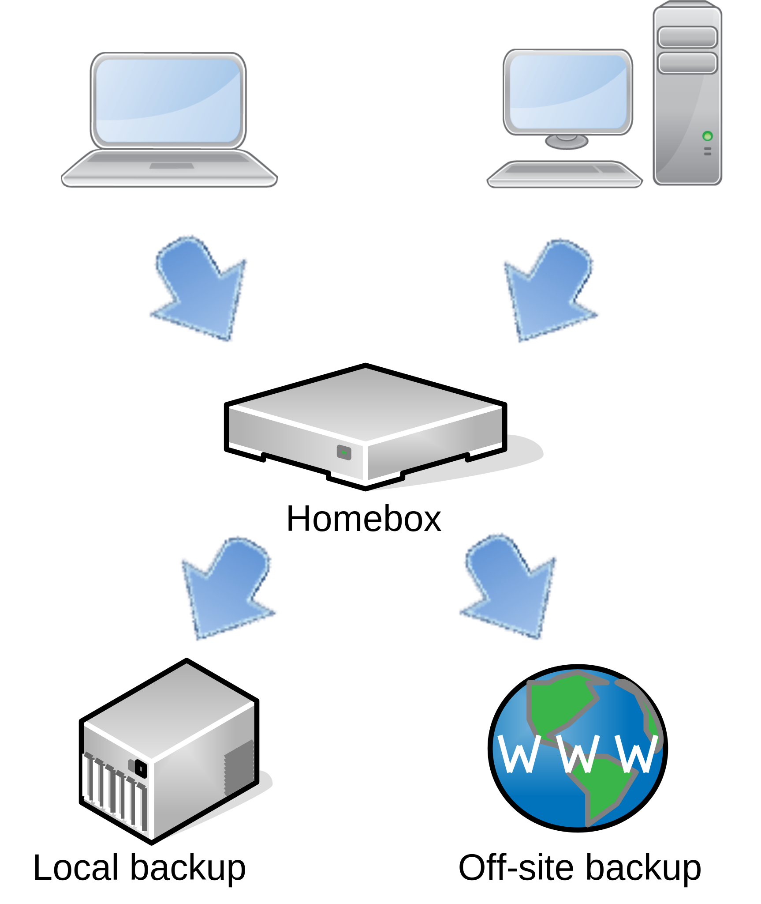
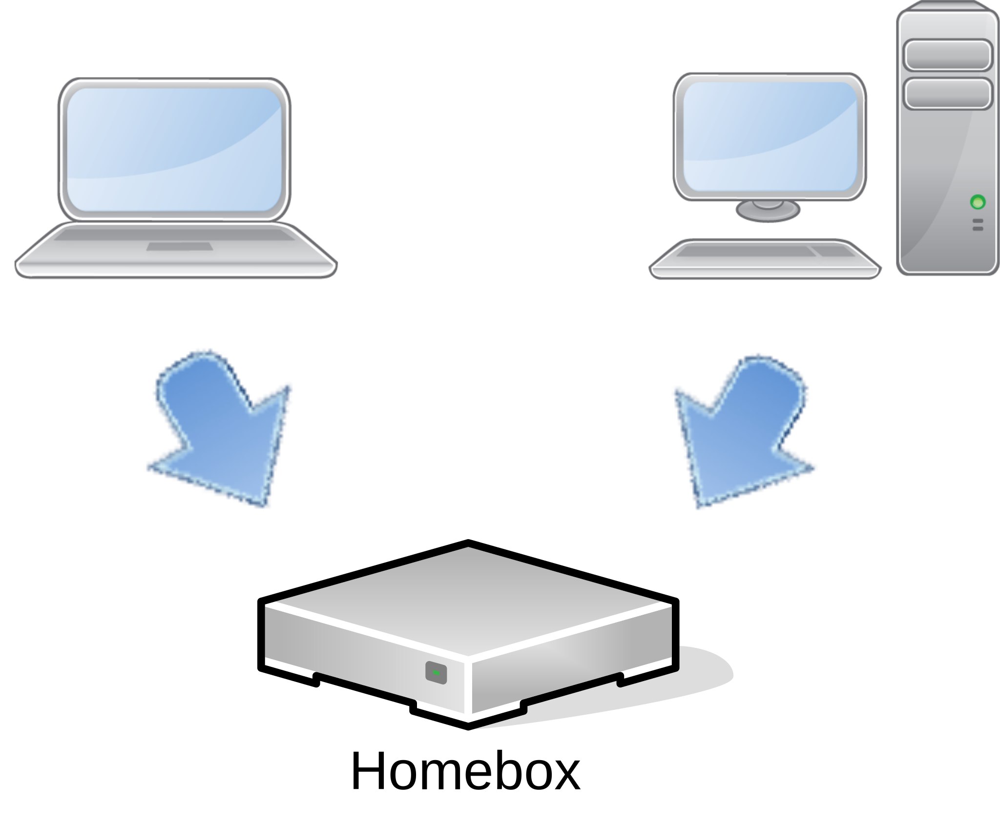

The homebox platform can be configured to act as a backup server for your home network, using borg-backup software.
Ideal configuration

This configuration allows you to use encryption and incremental backups, with a plain basic local or remote storage, like a USB RAID enclosure or a remote samba share.
It will automatically use the first backup location you have defined. For instance, if you have configured hombox to backup on local USB drive and on a remote SAMBA share, the local drive will be used for storage:
Local backup only

If you do not have an external device to store the backup, you can still use homebox as a backup server. In this case, the files will be stored in the home folder, for each user, using the same principle.
This is obviously less safe than using a remote or external device to backup. You can mitigate the risk by using software RAID in the preseed file.
Tutorial
In this example, you will see how to set up a backup solution on a USB NAS attached to your homebox.
Your backup configuration should look like this:
# Install backup scripts backup: install: true type: borgbackup alerts: jabber: true locations: - name: nas1 automount: true url: usb://mnt/backup/nas1/homebox uuid: c09c23de-97b6-492b-9c7f-e3cd894862d1 active: yes frequency: daily keep_daily: 7 keep_monthly: 12 idle_sec: 60
In this example, each user will have a dedicated directory accessible over SSH, on the USB drive ‘nas1’. Under the hood, this is done in the SSH authorized_keys configuration file on the server.
This is an example on how to back-up a folder in your home directory. You need to have borg-backup installed on your workstations, and to have created an SSH key, dedicated for backup.
Step 1: Configure the connection
Example of the syntax to use in your ~/.ssh/config configuration file:
Host backup.homebox.space User bob IdentityFile ~/.ssh/backup.rsa
Step 2: Initialise the backup
First, you need to initialise a backup repository on your machine:
Enter new passphrase: Enter same passphrase again: Do you want your passphrase to be displayed for verification? [yN]: By default repositories initialized with this version will produce security errors if written to with an older version (up to and including Borg 1.0.8). If you want to use these older versions, you can disable the check by running: borg upgrade --disable-tam ssh://bob@backup.homebox.space/mnt/backup/local/bob/books See https://borgbackup.readthedocs.io/en/stable/changes.html#pre-1-0-9-manifest-spoofing-vulnerability for details about the security implications. IMPORTANT: you will need both KEY AND PASSPHRASE to access this repo! Use "borg key export" to export the key, optionally in printable format. Write down the passphrase. Store both at safe place(s).
Step 3: create the first backup
Then, create the backup itself:
bob@workstation:~ $ borg create --progress bob@backup.homebox.space:/mnt/backup/nas1/bob/Documents::Documents Documents
Enter passphrase for key /home/bob/.config/borg/keys/backup_homebox_space__mnt_backup_nas1_bob_backups: